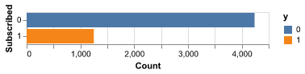
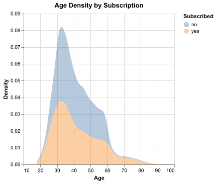
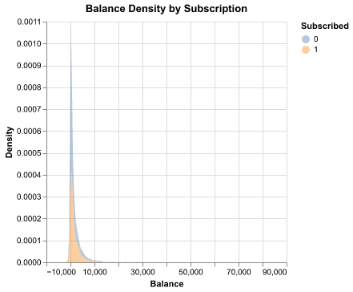
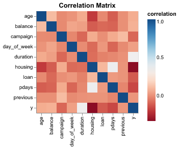
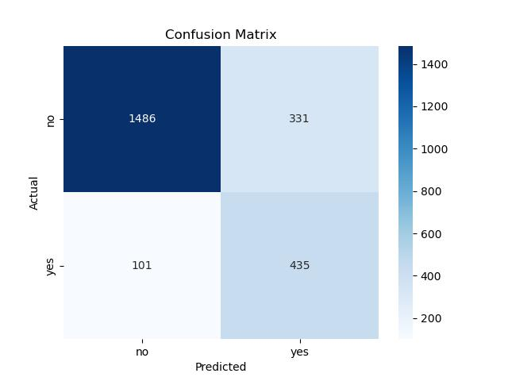
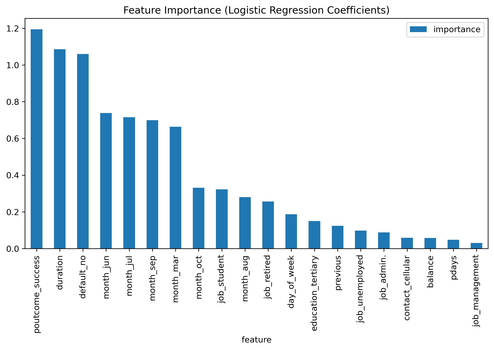

| Unnamed: 0 | age | balance | housing | loan | day_of_week | duration | campaign | pdays | previous | y |
|---|---|---|---|---|---|---|---|---|---|---|
| count | 5489 | 5489 | 5489 | 5489 | 5489 | 5489 | 5489 | 5489 | 5489 | 5489 |
| mean | 40.9096 | 1569.7 | 0.628712 | 0.139552 | 14.358 | 255.45 | 2.06449 | 222.158 | 3.16761 | 0.227728 |
| std | 11.3588 | 3188.92 | 0.483193 | 0.346553 | 7.92553 | 232.166 | 1.54801 | 111.608 | 4.96694 | 0.419404 |
| min | 18 | -1884 | 0 | 0 | 1 | 6 | 1 | 1 | 1 | 0 |
| 25% | 32 | 159 | 0 | 0 | 7 | 111 | 1 | 131 | 1 | 0 |
| 50% | 38 | 589 | 1 | 0 | 14 | 188 | 2 | 192 | 2 | 0 |
| 75% | 48 | 1731 | 1 | 0 | 20 | 317 | 2 | 326 | 4 | 0 |
| max | 89 | 81204 | 1 | 1 | 31 | 2184 | 14 | 854 | 275 | 1 |
Predicting Marketing Campaign Response Using Logistic Regression
Summary
In this project, we developed a machine-learning pipeline using logistic regression to predict whether a customer will subscribe to a marketing campaign. The workflow combined a preprocessing stage (StandardScaler and OneHotEncoder) with a logistic regression classifier, followed by training and evaluation using a train/test split.
After applying class-weighting to address the dataset’s imbalance, the model achieved an accuracy of 0.82 indicating strong overall discrimination between the subscribed (“yes”) and not-subscribed (“no”) classes. Importantly, class-weighting significantly improved the model’s ability to detect positive cases, giving the “yes” class a recall of 0.82. This shows that the weighted logistic regression approach is better suited for imbalanced marketing data, where correctly identifying potential subscribers is more valuable than simply maximizing accuracy.
Introduction
Background:
Financial institutions frequently rely on direct marketing campaigns to promote new products and services to potential clients. One common approach is telephone-based marketing, where bank representatives call customers to inform them about financial offerings, such as long-term deposits and attempt to persuade them to subscribe. Although this method can be effective, it is also resource-intensive calling uninterested or unlikely customers wastes time, labor, and operational costs. As a result, banks increasingly turn to data-driven decision-making to identify which individuals are most likely to respond positively to a campaign.
The Bank Marketing Dataset was created within this context (Moro, Cortez, and Rita (2014)). Compiled by researchers at the University of Minho in Portugal, it captures detailed information from a series of telephone marketing campaigns run by a Portuguese banking institution. The dataset includes demographic attributes (such as age, employment type, and marital status), financial indicators (such as credit defaults and loan status), and campaign-specific variables (including previous contact outcomes and call duration). The target variable indicates whether a customer ultimately subscribed to a term deposit, making the dataset a classic example of a binary classification problem.
The main question explored in this project is:
“Can we predict whether a bank customer will subscribe to a term deposit based on their demographic characteristics, financial information, and interactions with previous marketing campaigns?”
The dataset includes three main categories of features:
- Client demographics and personal information
age
job
marital
education
default (has credit in default)
housing (has housing loan)
loan (has personal loan)
- Current campaign interaction
contact — type of communication (cellular/telephone)
day_of_week — day of contact
month — month of campaign
duration — call duration in seconds
campaign — number of contacts during this campaign
- Past campaign and historical interaction
pdays — number of days since last contact
previous — number of previous contacts
poutcome — outcome of previous campaign
Methods
Data
The dataset used in this project is the Bank Marketing Dataset (Moro, Cortez, and Rita (2014)), created by Moro, Cortez, and Rita (2014) at the University of Minho in Portugal. The data was sourced from the UCI Machine Learning Repository, and can be accessed online at https://archive.ics.uci.edu/dataset/222/bank+marketing. Each row in the dataset represents a single customer contacted during a direct marketing phone campaign, and includes information such as demographic attributes, financial status, call details, previous campaign interactions, and the final outcome indicating whether the customer subscribed to a term deposit.
Analysis
A logistic regression model (Nick and Campbell (2007)) was used to predict whether a marketing campaign will be successful or not. All original variables from the dataset were included in the analysis. Before fitting, numerical features were standardized with a StandardScaler, and categorical variables were converted to binary indicators via OneHotEncoder. The dataset was split into 80% training and 20% testing, and class imbalance was addressed by balancing class weights during model training. The model’s performance was evaluated using accuracy and ROC-AUC scores.
The code used to perform this analysis and generate the accompanying report can be found here: https://github.com/Roccolee18/bank_marketing_group_24/blob/main/marketing_campain_predictor.ipynb
Results & Discussion
The logistic regression model developed for this analysis provides meaningful insight into the factors associated with customer subscription, but it also highlights the intrinsic challenges of modeling imbalanced marketing data. Our pipeline combined appropriate preprocessing steps—StandardScaler for numerical features and One-Hot Encoding for categorical variables—with a LogisticRegression classifier to ensure proper handling of the heterogeneous dataset while respecting the Golden Rule and avoiding data leakage.
The performance metrics indicate that the model performs reasonably well overall. The high accuracy suggests strong ability to distinguish between subscribers (“yes”) and non-subscribers (“no”). Although accuracy alone is not an appropriate metric for this imbalanced context, because the majority class dominates the dataset (Li, Bellotti, and Adams (2019)).
More importantly, the class-weighted logistic regression successfully shifts the model’s focus toward the minority class. The recall for the “yes” class reaches 0.82, a substantial improvement compared to what a non-weighted model would typically achieve on an imbalanced dataset. This indicates that the model is able to identify most customers who eventually subscribe—an outcome that aligns with the core business objective, where failing to detect potential subscribers is far more costly than incorrectly flagging non-subscribers. The precision for the “yes” class is lower (0.57), which is an expected trade-off: by increasing recall and giving more weight to positive cases, the classifier becomes more permissive and produces more false positives. However, in a marketing context—where the cost of contacting an uninterested customer is low compared to the value of identifying a true potential subscriber—this trade-off is acceptable and strategically desirable.
The confusion matrix (Susmaga (2004)) supports this interpretation. Out of 536 actual subscribers, the model correctly identifies 435 true positives while misclassifying 101 as non-subscribers. On the other hand, among the majority class, 1486 non-subscribers are correctly classified, with 331 false positives. These numbers reflect a deliberate shift in the decision boundary due to class balancing: the model becomes more sensitive to the minority class at the expense of increasing false positives.
Overall, the balanced logistic regression model is appropriate for this business problem. Its ability to capture a large portion of true subscribers, even with lower precision, aligns with the strategic goal of maximizing successful marketing outreach. By prioritizing recall in the positive class, the model supports proactive customer engagement and provides a meaningful foundation for future marketing campaigns.
These results show that using a class-weighted logistic regression helps the model catch many more people who are likely to subscribe. This can be useful for marketing teams because it means they can focus their efforts on customers who are more likely to say “yes.” It also shows which factors—like the success of previous campaigns, the month of contact, or call duration—matter most, which can help improve how future campaigns are planned.
These results also bring up a number of future questions. For example, it is unclear whether another type of model, such as a tree-based method, could perform even better than logistic regression on this imbalanced data. Another question is whether the same patterns would appear if we ran this analysis on a different marketing campaign or a different time period. Finally, it would be useful to understand which types of customers the model tends to misclassify most often, and whether adding more customer information could help the model make more reliable predictions.
Data Validation
Before working on the dataset, we need to perform some validation checks to make sure that raw data meet the required format. The validation will be performed on the following points:
Correct data file format
Correct column names
No empty observations
Missingness not beyond expected threshold
Correct data types in each column
No duplicate observations
No outlier or anomalous values
Correct category levels (i.e., no string mismatches or single values)
Target/response variable follows expected distribution (Located in the Model Fitting and Training section)
No anomalous correlations between target/response variable and features/explanatory variables
No anomalous correlations between features/explanatory variables
EDA
A brief summary of the distribution of numerical variables can be found in Table 1:
Figure 1 shows the distribution of people who subscribed and didn’t subscribe can be found below:

Figure 2 shows a comparison of the distribution of subscribed people among age can be found below:

This shows that age can be a very good predictor for subsciption when used on its own.

In Figure 3 we can see that the distribution of balance is right skwed and it might not be a good predictor on its own for subscription. However, when considering other variables, it might be useful.
The following shows a heatmap of the correlation among all the variables:

Figure 4 shows a heatmap of the correlation between variables. We can spot that there really isn’t multicolinearity between the variables.
Fitting the model and making predictions
After fitting the logistic regression model, we can visualize the results by creating the confusion matrix. This is displayed in Figure 5:

Additionally, we can look at other metrics of the model. These are displayed in Table 2:
| Unnamed: 0 | precision | recall | f1-score | support |
|---|---|---|---|---|
| 0 | 0.936358 | 0.817832 | 0.87309 | 1817 |
| 1 | 0.567885 | 0.811567 | 0.668203 | 536 |
| accuracy | 0.816405 | 0.816405 | 0.816405 | 0.816405 |
| macro avg | 0.752122 | 0.814699 | 0.770647 | 2353 |
| weighted avg | 0.852422 | 0.816405 | 0.826418 | 2353 |

Figure 6 shows that p_outcome_success and duration are the most important features for this model while job_management and pdays are the least important.
References
Li, Yazhe, Tony Bellotti, and Niall Adams. 2019. “Issues Using Logistic Regression with Class Imbalance, with a Case Study from Credit Risk Modelling.” Found. Data Sci 1 (4): 389–417.
Moro, Sérgio, Paulo Cortez, and Paulo Rita. 2014. “A Data-Driven Approach to Predict the Success of Bank Telemarketing.” Decision Support Systems 62: 22–31.
Nick, Todd G, and Kathleen M Campbell. 2007. “Logistic Regression.” Topics in Biostatistics, 273–301.
Susmaga, Robert. 2004. “Confusion Matrix Visualization.” In Intelligent Information Processing and Web Mining: Proceedings of the International IIS: IIPWM ‘04 Conference Held in Zakopane, Poland, May 17–20, 2004, 107–16. Springer.